Exercise 1.1 - HTTP Basics
Objectives
Estimated Time: 20 minutes
Part 0: (if you are not already familiar with Burp)
In this exercise, we will use the Burp proxy to intercept HTTP requests and responses. The goal of the exercise is to become familiar with Burp.
Part 1:
Learn how to manipulate requests and responses with Burp and how invalid requests and responses are affecting the browser and the server.
Part 2:
Understand how HTTPS requests can be intercepted with Burp and what limitations may exist.
Requirements
- [x] Lab VM
Part 0: Introduction to Burp
Step by Step
Burp Community Edition is a free interception proxy created by PortSwigger. It can be used to inspect and manipulate HTTP requests, as well as HTTP responses. Any requests being sent by the browser can be intercepted by Burp. You will be able to edit requests before they are passed to the server. The reverse is also true: Any response from the server can be edited before the browser receives it.
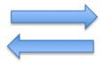
Burp Overview
-
Start Burp by clicking on the icon on the left.
-
Accept License
Click on "I Accept" on the Terms and Conditions prompt.
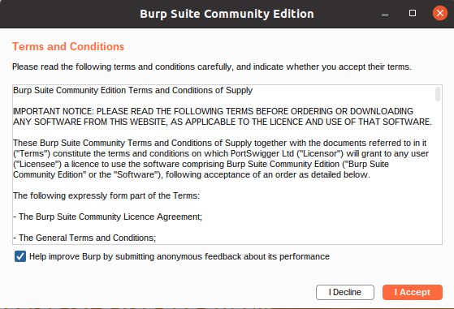
DO NOT INSTALL ANY UPDATES!
Please do not install any updates if prompted.
The Burp Community Edition only allows for temporary projects. Click "Next" on the Welcome screen.
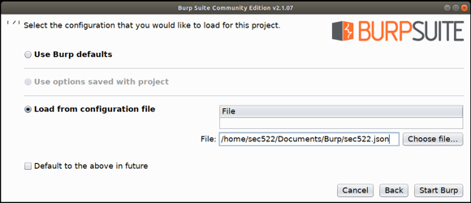
-
Next, select "Load from configuration file" and then select "Choose File" on the right hand side.
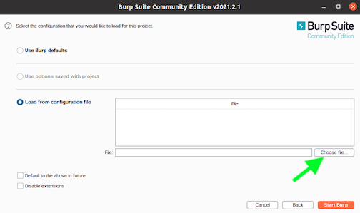
The file is located in the "Documents" directory and then "Burp" directory. The prepared configuration file is "sec522burp.json". Select to open the file and then "Start Burp" (the orange button on the lower right hand corner)
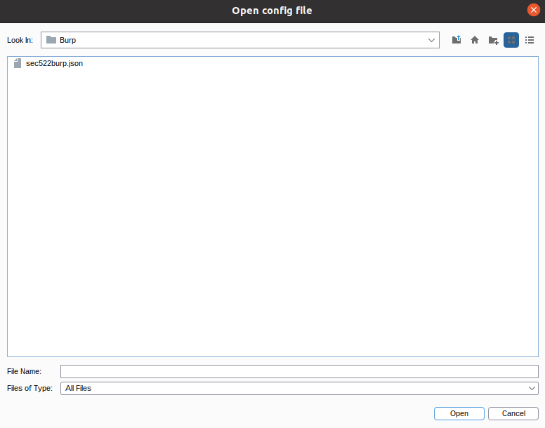
Eventually, you will see the main Burp window.
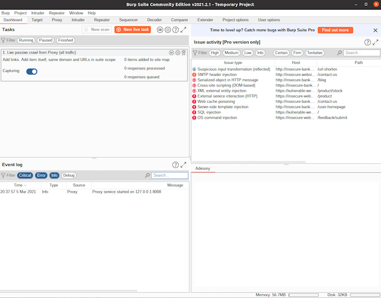 Main Burp Window
-
For now, we want to disable interception via Burp. Instead, we would like to have Burp record requests and responses without holding them. Select the "Proxy" tab and make sure the "Intercept" button states "Intercept is off". Click the button to toggle it from "on" to "off".
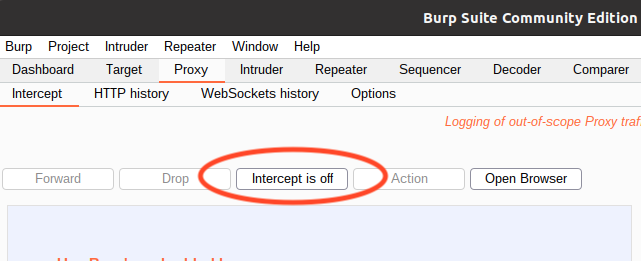
-
Start the Chrome web browser by clicking the Chrome icon on the left.
-
After Chrome starts, use the Proxy Switcher plugin to select Burp as a proxy. The Proxy Switcher plugin can be found in the top right corner of Chrome. The icon is gray to indicate that no proxy is selected, and Chrome connects directly. Once you select a proxy, the icon will be red. Click on the icon to open the settings. Select "Manual Proxy" to activate the proxy. "Burp" should be the active selection in the "Profile" dropdown.
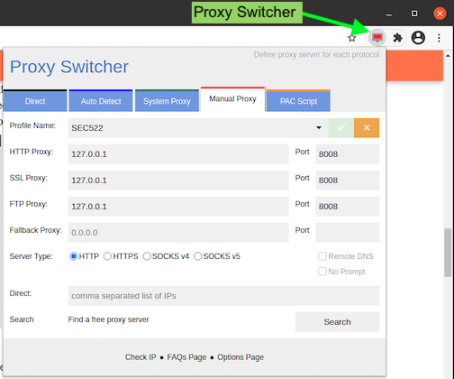
-
Proxy Switcher Configuration
If you wish to turn off interception later, just select "Direct" from the Proxy Switcher dialog.
Proxy Switcher
Proxy switcher gives you an easy means to toggle between traffic directly going from browser to website or routing through the Burp proxy. When the Proxy Switcher icon is red, you know the traffic is going through the Burp proxy. If you toggle the Proxy Switcher to route traffic to Burp and Burp is not running, that could lead to the browser traffic to time out.
-
In Chrome, browse to http://lab-1.1.sans.labs/ (expect a small delay on this first page load)
-
You are now presented with an Animal Shelter web application.
-
If you pass these tests, switch back to Burp by clicking on the Burp icon in the "Favorites" list on the left (the bottom one). At this point, Burp is recording requests and responses, but not allowing you to alter them. You can inspect the requests and responses by selecting the "Target" tab.
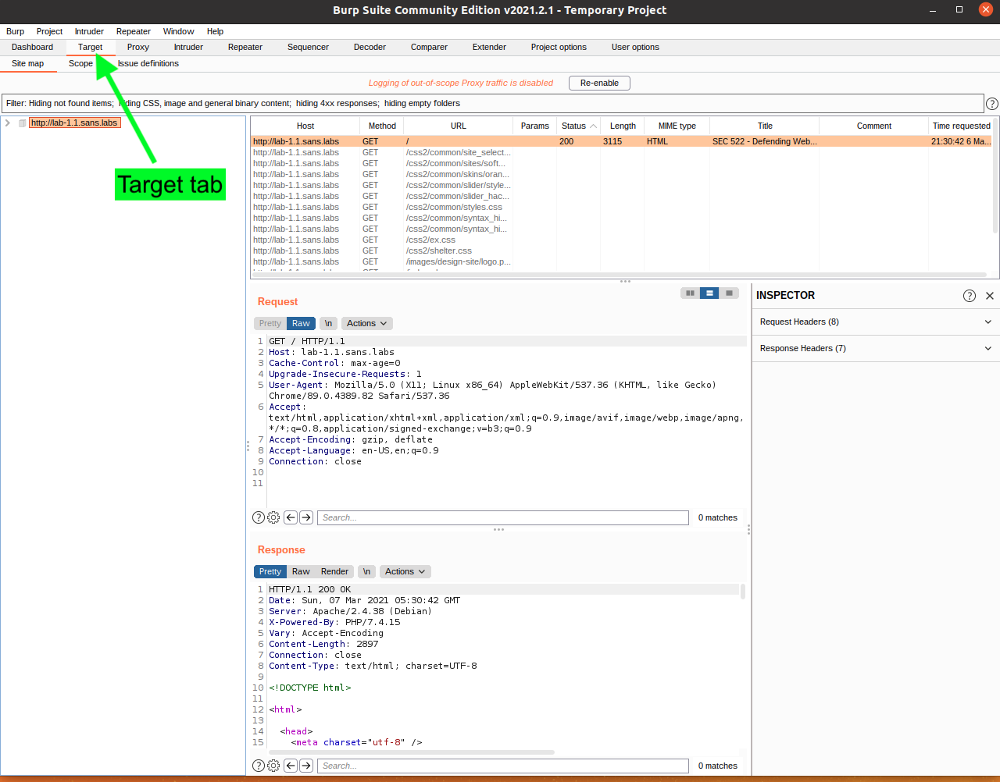 Burp Target Tab
Highlight the request for "/" (likely at the top).
Use the information from the target tab to answer the first two challenges in NetWars. See under day 1, there are two 1.1 Part 0 challenges. Review the questions pertaining to this HTTP request that is highlighted. For these challenges, there are hints available on NetWars at the cost of some points to help you if necessary.
Part 1: Manipulating HTTP Requests
Step by Step
-
Load http://lab-1.1.sans.labs/inspect.php in Chrome. This page is also accessible by clicking on the link (Inspect Headers) at upper right hand corner of the Animal Shelter main page.
-
Make sure Burp is running
-
In Burp, select the "Proxy" tab, and make sure "Intercept" is "on". If not, click on the button to enable it.
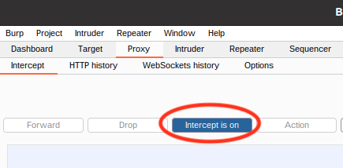
Enabling Interception in Burp
Warning
After interception is enabled in Burp, and Burp is enabled as a proxy using Proxy Switcher in Chrome, all requests will be held by Burp. If you refresh your browser, the connection will appear to "hang" until you forward the request in Burp.
-
Enable Burp as a proxy in Chrome via Proxy Switcher.
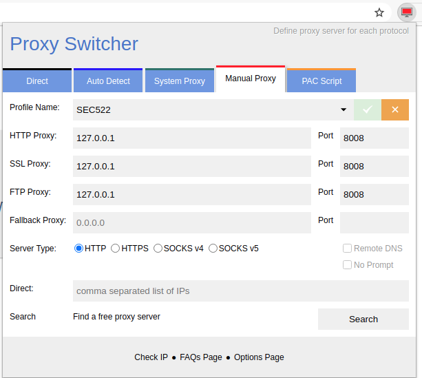
-
Enabling Burp as a Proxy in Chrome via Proxy Switcher
-
Reload the page in Chrome by clicking the
-
Switch to Burp (click the Burp icon at the bottom of the left "Favorites" bar)
You will now see the request held by Burp. For now, we just want to make sure everything is working right.
-
Click "Forward".
-
Switch back to Chrome.
-
Reload the page again.
-
Switch to Burp. This time remove the "Host" header from the request. Make sure you remove the entire line. There should be no empty line left in the header.
-
Click "Forward".
What error message does Chrome display?
400 Bad Request
-
In Burp, select the "HTTP history" from the "Proxy" tab and select the last line to answer the next few questions. The last line should represent the request you just edited. You will find the answers by selecting the "Response" tab in the middle of the Burp window.
What status code did the server use to respond?
400
What server version was used?
Apache/2.4.38 (Debian)
-
Reload the page once more.
-
Switch back to the "Intercept" tab in Burp.
-
In Burp, add a second "Referer" header with arbitrary content. (If there is no Referer header, then add two "Referer" headers to the request). For example:
Referer: http://www.test.com Referer: Some random nonsense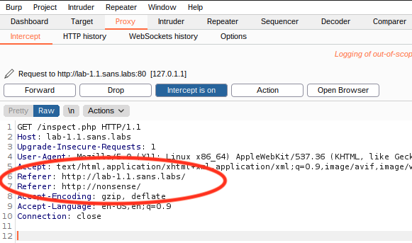
Request in Burp with two "Referer" headers prior to clicking "Forward".
-
Once the response is returned, the page will display the Referer header as the web application received it. What do you see? The content of the first, second, or both headers?
This information should help you solve the NetWars challenge for this section. If necessary, the NetWars interface can provide hints.
Part 2: Intercepting HTTPS Requests
Step by Step
Load an HTTPS page via Burp. Inspect the certificate and explain why a warning is displayed.
-
Keeping Burp enabled from the prior exercise, but disable "Interception" (in the "Proxy" menu check the "Intercept" tab and toggle the "Intercept on/off" button) and visit any HTTPS page. For example, https://lab-1.1.sans.labs/.
You will receive a warning. Why?
-
Click on "Advanced".
-
Inspect the certificate by clicking on "Not secure" to the left of the URL.
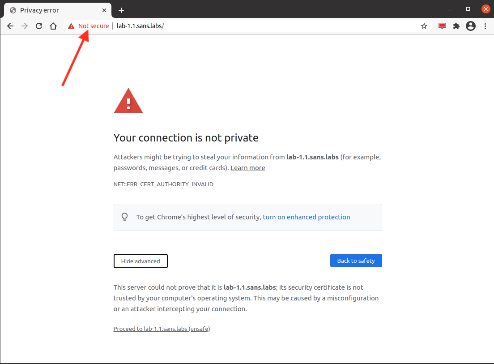
TLS Security Warning.
-
Click on "Certificate (invalid)". This will display the certificate information:
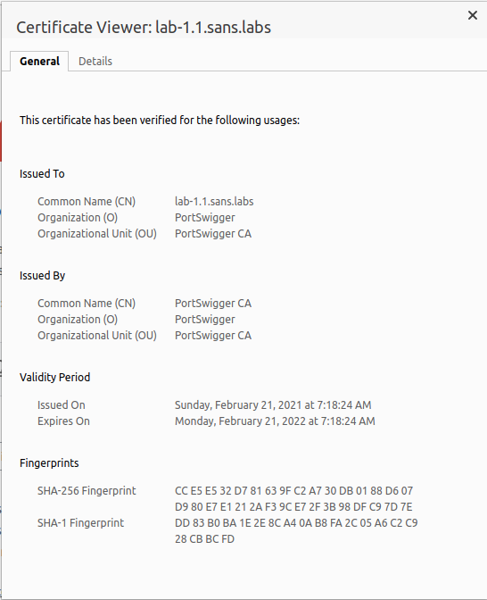 Burp Certificate
This information should help you solve the NetWars challenge for this section. If necessary, the NetWars interface can provide hints.
- Disable the proxy after you are done with this exercise.
Conclusion
- Burp is a man-in-the middle proxy, allow you to intercept and manipulate requests prior to sending the request to server and before the response is received by the browser.
- Browser handles the request and response header, generally without the user being aware of their existance.
- The request headers have an impact on how the server process the request. The reponse headers also have an impact on the browser's behavior as well.
Explore Further
- What is HTTP response code 418?
- With interception on, try the following links https://lab-1.1.sans.labs/images/ and https://lab-1.1.sans.labs/images. What are the differences?